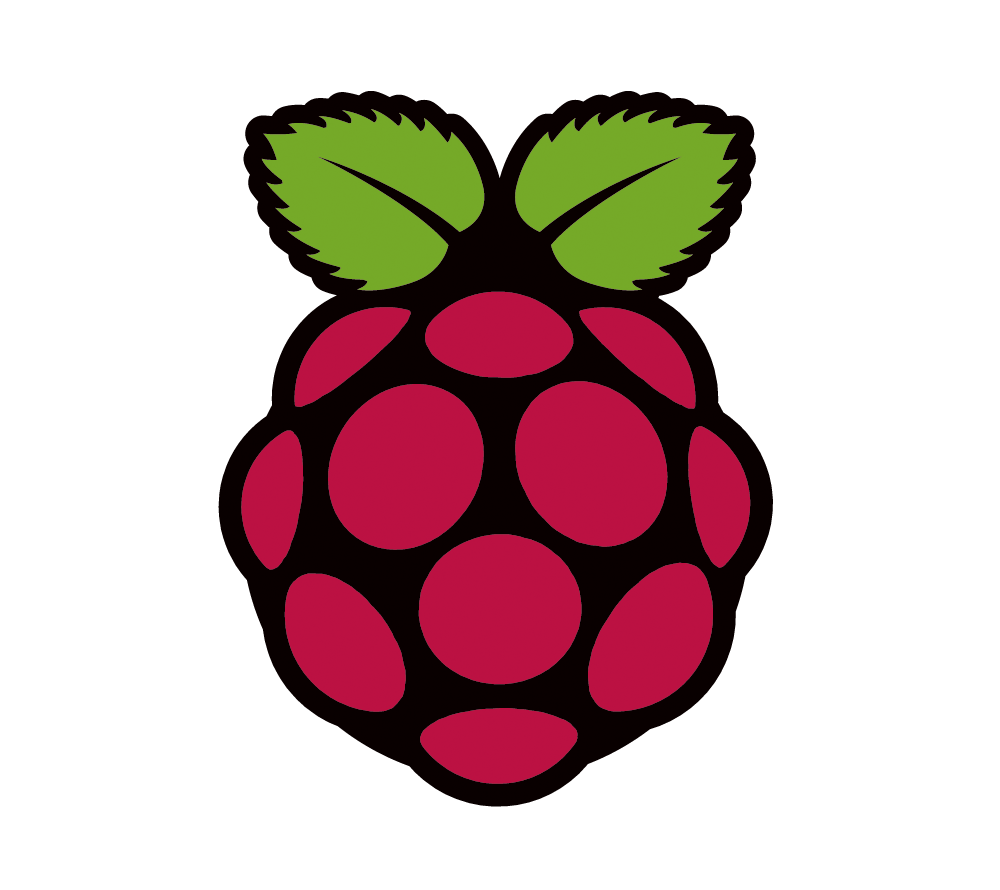

Motor Controller Test
Etat actuel
Distances :
roue droite :
0 mm
roue gauche :
0 mm
Orientation :
cap (0-360°) :
0 °
Vitesses :
roue droite :
0 m/s
roue gauche :
0 m/s
Coefficients PID :
Kp :
Ki :
Kd :
mettre à jour
Déplacement
distance :
mm
vitesse :
m/s
Démarrer Retour